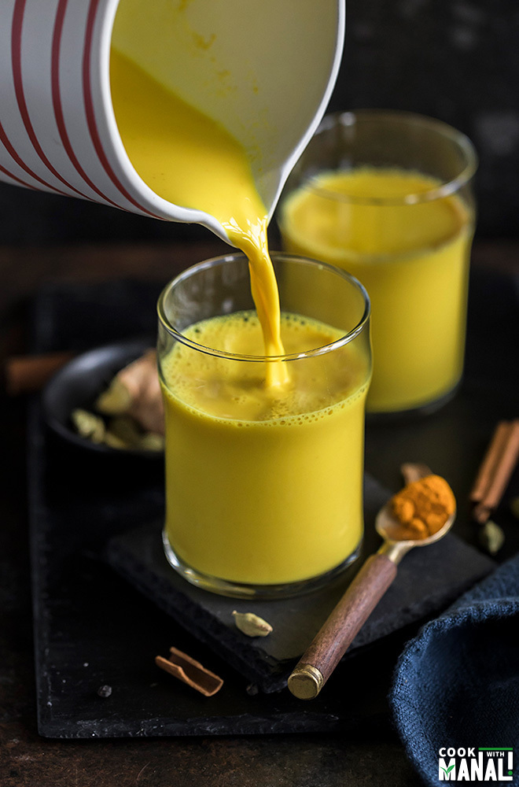

Haldi Doodh

Description
Haldi Doodh is a warm comforting beverage made with Turmeric and Milk. It soothes the throat and has general anti inflammatory properties
Ingredients
Steps
- Take 250ml of milk in a Mug
- Microwave it for 1 minute
- Add 1 tsp of turmeric powder and mix
- Serve warm and enjoy!